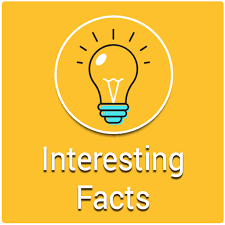
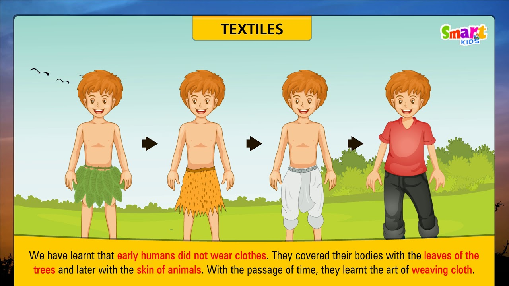
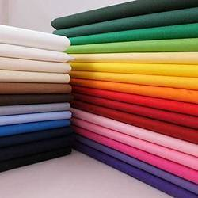
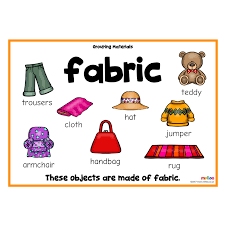

Fact-1
Human beings in ancient times used leaves and skins of animals as clothes. Clothes were also made from metal.
Fact-2
During the freedom struggle, Mahatma Gandhi encouraged people to wear clothes made of khadi yarn. People burnt imported clothes during Swadesi movement
SUMMER
- cotton
- Rayon
- Lenin

Fabrics Characteristics
Characteristics of Cotton
Natural
Absorbs more water
Dry slowly
Comfort to wear
Characteristics of Rayon
Absorbent
soft
light weight
Fact-3
The material used for making school bags is also a kind of fabric. they are also used in making banners, flags, shoes, curtains, in book binding etc.
Fact-4
We all use polythene bags for different purposes. Polythene is very difficult to decompose. To protect our environment, we should use cloth bags instead of polythene bags